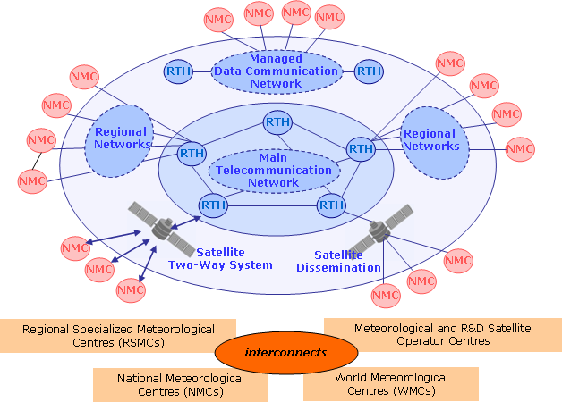
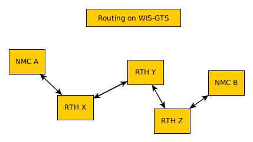
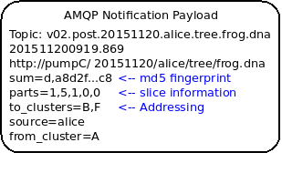
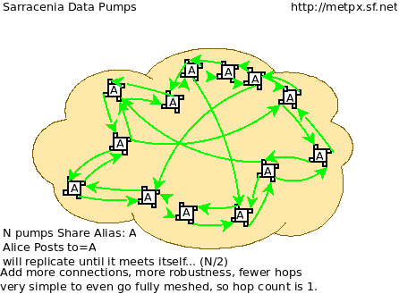
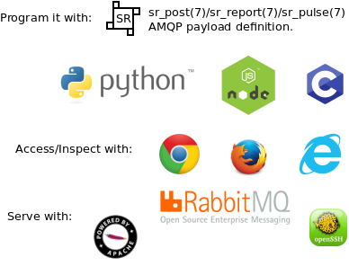

Échange de données de type maillé pour le WIS-GTS en 2019
À l’origine, une partie de la démonstration au comité de WMO sur les protocoles de mise en file d’attente des messages. Bien que cette proposition n’ait pas été retenue à ce moment-là, elle a servi de base pour beaucoup de discussions depuis.
Résumé
Au cours de la dernière décennie, le Service d’information de l’Organisation météorologique mondiale (WMO), partie 1, a mis en place des catalogues de métadonnées pour certains ensembles de données météorologiques mondiales. Dans WIS-DAR, Discovery, Access, and Retrieval, l’accent a été mis sur Discovery, car il s’agissait d’une difficulté majeure. En termes d’échange de données proprement dit, le réseau préexistant: le Système mondial de télécommunications (SMT) est resté la méthode acceptée par WMO pour faire circuler les données météorologiques en temps réel météorologique [1] utilisée pour obtenir l’accès et soutenir la récupération. Il le fait par le biais d’accords bilatéraux établis entre les membres individuels.
Le réseau préexistant alimente des systèmes préexistants qui fonctionnent sur des prémisses différentes de WIS, et il n’y a pas de mappage particulièrement bon de D à A et R aujourd’hui. L’utilisation des métadonnées SIO pour favoriser l’échange de données en temps réel n’est pas efficace, et les données GTS ne sont pas facilement interopérables avec les technologies principalement Web d’autres industries.
Cette note suggère qu’un réseau maillé de serveurs Web est maintenant possible grâce aux grands progrès technologiques qui réduisent le besoin de règles et de structures pour l’échange international de données météorologiques. Auparavant, les limitations technologiques imposaient des contraintes strictes à l’échange international de données. De nos jours, un échange international efficace de données peut être organisé avec moins d’intervenants, moins de hiérarchie, moins de coordination. Une stratégie d’interconnexion plus souple et moins lâche permet aux membres d’échanger beaucoup plus facilement de nouveaux ensembles de données de manière systématique, sans avoir à élaborer des accords d’échange bilatéraux ou multilatéraux. En effet, souvent, le GTS est contourné parce qu’il est si mal adapté à de tels échanges.
Les membres qui acceptent d’échanger des données peuvent le faire directement, ce qui complète le rêve du WIS. Les travaux existants sur le SIO, la normalisation de l’échange de métadonnées, sont complétés par l’ajout de l’échange des données sous-jacentes à l’aide de méthodes ouvertes normalisées, avec une cartographie simple à partir des métadonnées. Étant donné que la mise en œuvre proposée utilise des normes existantes, WMO n’a pas besoin d’en définir d’autres, et l’interopérabilité et l’accès pour d’autres acteurs de la société au sens large devraient être simples. Le protocole sr_post, et un certain nombre d’implémentations existantes de celui-ci, conviennent parfaitement.
Bien que l’on pense que le protocole sr3_post a un grand potentiel pour améliorer l’échange de données de WMO, il faudra quelques années pour l’adopter, et avant son adoption, il faut s’entendre sur le contenu de l’arborescence des fichiers. Aujourd’hui, la prochaine étape consisterait à trouver des pays partenaires avec lesquels s’engager dans des échanges de données expérimentales pour valider l’approche et déterminer en collaboration les détails de la mise en œuvre.
GTS a été conçu il y a longtemps
Le Système mondial de télécommunications (GTS) du Service météorologique mondial (WIS) de l’Organisation météorologique mondiale (WMO) est la méthode acceptée par WMO pour diffuser des données météorologiques en temps réel [1] Il le fait par le biais d’accords bilatéraux préétablis sur qui fait circuler quoi à qui. Lorsque les données arrivent, elles sont immédiatement envoyées aux destinations appropriées. En termes matériels, le GTS était un ensemble de liaisons point à point. Il est, en général, très fiable et a de bonnes performances pour les types de données pour lesquelles il a été envisagé.
Le GTS a appliqué avec succès et élégance les technologies des années 1940 pour obtenir un échange mondial de données météorologiques, le plus évident, pour permettre au transport aérien commercial de se développer de manière exponentielle au cours des décennies suivantes. Il a été fabriqué dans un monde de liaisons téléphoniques point à point coûteuses, de bande passante très faible, de très faible puissance de calcul et de peu de normes existantes pour un transfert de données fiable. Aujourd’hui, les technologies sous-jacentes incarnées par Internet et le réseau principal régional de communication de données (RMDCN) (qui ont déjà absorbé les liaisons physiques du GTS) sont complètement différentes: la bande passante et le stockage sont relativement bon marché, la puissance de calcul est moins chère, les liaisons point à point sont maintenant plus chères que les nuages multipoints. Aujourd’hui, les membres de WMO veulent échanger des ordres de grandeur plus de types de données et des volumes plus élevés à une vitesse plus élevée.
Dans le passé, la communauté météorologique a dû créer des normes parce qu’aucun besoin similaire n’existait dans le reste de l’industrie. Au cours des dernières décennies, à mesure que l’adoption de l’internet s’est élargie et approfondie, des solutions horizontales ont émergé pour la plupart des questions techniques abordées par les normes de WMO. L’orientation stratégique de WMO a toujours été et continuera d’être d’utiliser des technologies du reste du monde et de ne pas définir inutilement leurs propres normes.
GTS est limité et inflexible
Dans le VTM traditionnel, lorsque de nouvelles données sont mises à disposition par un centre météorologique national (NMC), celui-ci doit émettre des avis et probablement discuter avec son centre régional de télécommunications (RTH) de l’acceptation et de l’acheminement des nouvelles données. Les RTH doivent discuter entre eux de l’opportunité d’échanger les données, et les autres NMC doivent en faire la demande à leur RTH. Pour que la CNG A puisse mettre les données à la NMC B, le personnel du STM des NMC et de tous les RTH intervenants doit accepter la demande et y donner suite.
De plus, les tables de routage de chaque NMC et de chaque RTH sont théoriquement, mais en pratique, difficilement inspectables. Il se peut que le produit recherché par NMC B soit déjà disponible dans leur RTH local, mais ni A, ni B n’ont de moyen efficace de le déterminer, autre que de demander aux administrateurs du RTH de B. Le routage manuel est inefficace, opaque et nécessite beaucoup de ressources humaines.
Enfin, le GTS a une taille de message maximale, qui, bien qu’elle ait été augmentée de 14 000 octets à 500 000 octets au cours des dernières années, est encore très limitative. Cela exclut de nombreux ensembles de données modernes importants (par exemple, RADAR, satellite, PNT). WMO n’a pas besoin de son propre transport de données, comme le montre l’utilisation par de nombreux membres de protocoles sans telles limitations, adoptés à partir de l’internet au sens large, tels que FTP, SFTP et HTTP. Encore plus souvent, ces transferts sont effectués par un arrangement bilatéral, car les transferts d’ensembles de données plus importants ne peuvent pas être exprimés dans les protocoles GTS actuels.
Le SIE initial, tel qu’il a été formulé il y a plus de dix ans, était en partie une tentative de remédier à cette opacité en introduisant certains concepts de gestion de l’information (GI) et en prenant en charge le DAR : découverte, accès et récupération. Tout ce que les membres de WMO veulent savoir, c’est quelles données sont disponibles auprès de quels centres. Nous publions donc des métadonnées dans les centres mondiaux de services d’information, où les informations météorologiques en temps réel du monde sont disponibles et certains moyens de récupération sont spécifiés.
Lorsqu’il s’agit dans l’abstrait, sans contraintes de temps, d’ajouter/ou de petits ensembles de données, le temps de récupération n’a pas d’importance, mais la pénalité d’accès imposée par l’utilisation de bases de données pour la récupération individuelle augmente avec le nombre d’éléments stockés et le nombre de requêtes ou de récupérations à soutenir. Au départ, le WIS était surtout préoccupé par l’obtention d’une plus grande visibilité des données, la compréhension des données disponibles. La partie 1 du WIS a principalement mis en œuvre une couche de métadonnées, tandis que le GTS a persisté à transférer les données réelles. Une fois que WIS Part 1 était en service et que DAR était disponible, ce qui à première vue semble beaucoup plus facile et plus convivial, pourquoi tout le monde n’a-t-il pas simplement utilisé DAR pour remplacer le GTS?

L’architecture WIS a tendance à concentrer la charge sur le GISCS, qu’il le veuille ou non. Même en supposant qu’ils le souhaitent, répondre à de gros volumes de requêtes dans une telle architecture est un problème. Le modèle mental pour cela est une base de données et chaque récupération est conceptualisée comme une requête. De la théorie de la complexité computationnelle[2]_, chaque requête est souvent une opération O(N) (ou dans le meilleur des cas d’indexation parfaite, O(log N)) et la récupération d’éléments spécifiques par leur clé est aussi, au mieux, O(log N).
Pour effectuer la récupération (le R dans DAR) de tous les éléments d’un index, un à la fois, le meilleur algorithme a la complexité N * log N. Le meilleur cas ne se présente que si les indices sont correctement conçus pour la méthode d’accès prévue. En pratique, sans une conception et une mise en œuvre minutieuses, la performance peut être dévolue à N**2.
Les bases de données sont optimales pour les enregistrements de taille fixe. Personne ne les utilise de cette façon
Il existe généralement deux grandes écoles de pensée sur le stockage des données météorologiques: les fichiers et les bases de données. Pendant de nombreuses années, les données étaient relativement petites, il y avait relativement peu de types de données, et elles tenaient dans de petites bases de données et, avec suffisamment d’analyse, on pouvait les normaliser à des champs de taille fixe.
Les bases de données relationnelles ont été inventées une décennie ou deux après le GTS, et elles optimisent le stockage et la récupération de données de taille fixe. ELles atteignent des performances presque optimales grâce à une sélection minutieuse du modèle de données et à l’utilisation intensive de champs de taille fixe. En pratique, l’utilisation de champs de taille fixe s’avère être une contrainte difficile à satisfaire et de nombreux ensembles de données intéressants, en particulier sur les systèmes dont la fonction principale est la transmission de données, sont plus logiquement stockés sous forme de séquences d’octets de taille arbitraire, généralement appelées: Binary Large Objects, ou BLOBS. Lorsque l’on stocke des BLOBS, une base de données devient algorithmiquement un peu différente d’un système de fichiers.
Essentiellement, les BLOBS sont une liste indexée de flux d’octets. Une fois qu’une base de données utilise des BLOBS, elle supporte la même surcharge pour la récupération des données qu’un système de fichiers correctement utilisé. Quelle que soit la méthode de stockage, le coût de récupération sera O(log N) pour une clé connue. Dans un système de fichiers, la clé est le nom. Dans une base de données, la clé est une valeur object-id ou index. Si l’on souhaite utiliser plusieurs indices, on peut toujours utiliser une base de données, ce qui est en grande partie ce qu’est la partie 1 du SIF. Il s’agit simplement d’une pratique standard pour stocker les données réelles dans des BLOBS, et les systèmes de fichiers sont une méthode compétitive pour les stocker.
Au fil du temps, à mesure que la taille des éléments de données augmente, il devient de plus en plus logique de les stocker dans des systèmes de fichiers et de limiter l’utilisation des systèmes de base de données au stockage des métadonnées et des index qui pointent vers les éléments de données stockés dans les fichiers.
Internet Push est un mauvais ajustement pour les gros flux
Les technologies dites Push sont en fait Pull. Un client demande à un serveur s’il dispose de nouvelles données. Le serveur répond avec la liste des nouvelles données disponibles, puis le client extrait les données. Cela signifie qu’une entité stockant des données doit récupérer les éléments du magasin de données (avec un coût O(log N) pour chaque extraction). Comme le domaine est un traitement en temps réel, le temps nécessaire à l’obtention des données par un client est également pertinent et lié à la fréquence maximale à laquelle un client est autorisé à demander des mises à jour. En général, les protocoles ATOM/RSS prévoient un intervalle minimum entre les événements d’interrogation de cinq minutes.
Chaque événement d’interrogation nécessite que le serveur examine sa base de données pour toutes les entrées correspondantes, cette recherche est probablement une opération d’ordre N. Ainsi, les réponses aux demandes de sondage sont coûteuses, et les extractions à partir du système de données sont également coûteuses, ce qui motive probablement le découragement habituel des sondages rapides.
Dans le meilleur des cas, des index basés sur le temps seront présents, et on pourra rechercher une table avec cette dimension et engager des opérations log(N) pour trouver la première observation à récupérer, puis avancer le long de cet index. Dans de nombreux cas pratiques, les bases de données ne sont pas indexées par heure, et donc la recherche initiale concerne toutes les stations, puis il faut examiner le temps pour les entrées récupérées, ce qui entraînera des opérations N**2, et dans certains cas, cela peut être encore pire.
Le coût réel de service d’un client dépend essentiellement de la construction optimale des indices du serveur. Ces caractéristiques sont cachées dans une base de données et ne sont pas facilement inspectées par quiconque sauf l’administrateur de la base de données.
Store And Forward est souvent meilleur dans la pratique
“Store and Forward (Stocker et transférer)” est un terme que nous utiliserons ici pour désigner les technologies qui traitent des données à la réception, par opposition au simple stockage des données et à l’attente des sondages des clients. Les systèmes en temps réel tels que le GTS contournent le problème des frais de récupération en stockant et en transférant en même temps. Lorsqu’une donnée est reçue, une table des parties intéressées est consultée, puis la transmission est effectuée sur la base des données déjà “récupérées”.
Le coût de transfert d’un article à un client donné est plus proche de O( log N ).
Cela fonctionne comme une optimisation car on transfère le message exactement au moment où il est reçu, de sorte que l’ensemble du processus de recherche est ignoré pour tous ces consommateurs connus. À titre de comparaison, les normes web de sondage normalisent le coût de la recherche à chaque intervalle d’interrogation.
Le coût de la recherche est très variable et n’est pas contrôlé par le serveur. Des requêtes mal structurées (par exemple par station, puis heure) peuvent entraîner une requête N*log(N) ou même une complexité N-carré.
Cela est particulièrement aigu pour les informations d’alerte météorologique, où une fréquence d’interrogation élevée est un besoin commercial, mais le volume de données est relativement faible (les alertes sont rares). Dans de tels cas, les données d’interrogation peuvent être 10 fois, voire 100 fois la quantité de transfert de données nécessaire pour envoyer les avertissements eux-mêmes.
En pratique, la charge sur les serveurs avec d’importants flux en temps réel vers de nombreux clients sera inférieure de plusieurs ordres de grandeur avec une technologie de poussée réelle, telle que le GTS traditionnel, à celle supportant la même charge avec les technologies Internet Push. Un coût distinct mais connexe de l’interrogation est la bande passante pour les données d’interrogation. En transférant les notifications à la réception, plutôt que d’avoir à gérer les interrogations, on réduit la charge globale, éliminant ainsi la grande majorité du trafic de lecture.
Un exemple concret d’économies de bande passante, à partir de 2015, serait celui d’une entreprise Allemande qui a commencé à récupérer les sorties NWP du datamart canadien à l’aide du web-scraping (sondage périodique du répertoire). Lorsqu’ils sont passés à l’utilisation de la méthode push AMQP, le nombre total d’octets téléchargés est passé de 90 Go/jour à 60 Go par jour pour les mêmes données obtenues. 30 GBytes/jour n’étaient que des informations (d’interrogation) pour savoir si de nouveaux résultats de modèle étaient disponibles.
Les exigences pour un système de stockage et de transfert:
connectivité TCP/IP,
transmission de données en temps réel,
par destination de file d’attente pour permettre l’asynchronie (clients qui fonctionnent à des vitesses différentes ou qui ont des problèmes transitoires),
Garanties d’intégrité au niveau de l’application.
De plus, la possibilité de régler les abonnements, en fonction de l’intérêt du client, optimisera davantage le trafic.
En termes de technologies internet, les principaux protocoles d’échange de données en temps réel sont XMPP et websocket. XMPP fournit une messagerie en temps réel, mais il n’inclut aucun concept d’abonnements, hiérarchiques ou autres, ou de file d’attente. Les sockets Web sont une technologie de type transport. L’adoption de l’un ou l’autre de ces éléments signifierait la création d’une pile spécifique au domaine pour gérer les abonnements et les files d’attente. Le protocole AMQP (Advanced Message Queueing Protocol) n’est pas une technologie Web, mais c’est une norme internet assez mature, qui provient du secteur financier et comprend toutes les caractéristiques ci-dessus. Il peut être adopté tel quel et une application AMQP relativement simple peut être construite pour servir les notifications sur les données nouvellement arrivées.
Alors qu’AMQP fournit une couche de messagerie et de file d’attente robuste, une petite application supplémentaire qui comprend le contenu spécifique des messages AMQP, et c’est la valeur du protocole Sarracenia et de l’application proposée comme implémentation de référence du protocole. Sarracenia envoie et reçoit des notifications via AMQP. Cette application ne nécessite ni ne possède aucune fonctionnalité spécifique à WMO et peut être utilisée pour la réplication de données en temps réel en général.
Une notification Sarracenia contient une URL (Uniform Resource Location) informant les clients qu’une donnée particulière est arrivée, les invitant ainsi à la télécharger. L’URL peut annoncer n’importe quel protocole que le client et le serveur comprennent : HTTP, HTTPS, SFTP par exemple. Si de nouveaux protocoles deviennent importants à l’avenir, leur mise en œuvre peut se faire sans modification de la couche de notification.
Comme ces notifications sont envoyées en temps réel, les clients peuvent lancer des téléchargements alors que la référence en question est encore dans la mémoire du serveur et ainsi bénéficier de performances de récupération optimales. Comme le temps d’accès des clients aux données est plus étroitement regroupé dans le temps, les i/o globales effectuées par le serveur sont minimisées.
Une notification contient également une empreinte digitale, ou somme de contrôle, qui identifie de manière unique un produit. Cela permet aux nœuds d’identifier s’ils ont déjà reçu une donnée particulière ou non. Cela signifie que les risques de mauvais acheminement des données sont plus faibles qu’auparavant, car s’il y a des cycles dans le réseau, ils sont résolus automatiquement. Les cycles dans le graphique de connectivité sont en fait un avantage car ils indiquent plusieurs routes et redondance dans le réseau, qui seront automatiquement utilisées en cas de défaillance du nœud.
Avec les avis AMQP sur un serveur de fichiers standard
Plusieurs protocoles et piles logicielles robustes et matures sont disponibles pour de nombreux protocoles de transport de données : FTP, HTTP, HTTP(S), SFTP. Un serveur de fichiers, en tant que moyen de transport de données est un problème résolu avec de nombreuses solutions disponibles dans l’ensemble de l’industrie. Contrairement au transport de données, pub/sub est une zone atomisée avec une myriade de solutions de niche, et aucune solution clairement dominante.
Le protocole Advanced Message Queueing Protocol est un standard ouvert, mis au point par les institutions financières, adopté plus tard par de nombreux éditeurs de logiciels, grands et petits. AMQP remplace les systèmes propriétaires de transmission de messages tels que IBM/MQ, Tibco, Oracle SOA et/ou Tuxedo. RabbitMQ est une implémentation AMQP de premier plan, avec des déploiements dans de nombreux domaines différents :
Rabbitmq fournit actuellement une implémentation de passage de messages mature et fiable, mais il existe de nombreuses autres implémentations open source et propriétaires si cela devait changer. Les brokers AMQP sont des serveurs qui fournissent des services de publication de messages et d’abonnement, avec une prise en charge robuste des files d’attente et des échanges hiérarchiques basés sur des sujets.
Chaque serveur exécute un courtier pour annoncer sa propre contribution, et ils s’abonnent aux messages de notification des autres. Les publicités sont transitives, en ce sens que chaque nœud peut annoncer tout ce qu’il a téléchargé à partir de n’importe quel autre nœud afin que les autres nœuds qui lui sont connectés puissent les consommer. Cela met en œuvre un réseau maillé entre tous les CN/DPCC/GISC.
Une couche de notification AMQP ajoutée au réseau de transfert de fichiers existant :
améliorer la sécurité car les utilisateurs ne téléchargent jamais, n’ont jamais à écrire sur un serveur distant. (tous les transferts peuvent être effectués par des abonnements initiés par le client, aucune écriture sur des serveurs homologues n’est nécessaire).
permettre des échanges ad hoc entre les membres à travers le RMDCN sans avoir à faire appel à des tiers.
peut fonctionner uniquement avec des échanges anonymes, pour éliminer complètement le besoin d’authentification. une authentification explicite supplémentaire est disponible si vous le souhaitez.
fournir un mécanisme similaire pour supplanter le GTS traditionnel (performances similaires au GTS existant, pas d’énormes pénalités d’efficacité).
contrairement aux GTS actuels : pas de limite de taille de produit, peut fonctionner avec n’importe quel format. l’insertion de données consiste à choisir une hiérarchie de fichiers (nom)
transparent (peut voir quelles données se trouvent sur n’importe quel nœud, sans nécessiter d’échanges humains). (Les personnes autorisées peuvent parcourir une arborescence FTP/SFTP/HTTP).
activer/supporter les topologies d’interconnexion arbitraires entre NC/DCPC/GISC (les cycles dans le graphique sont une caractéristique, pas un problème, avec les empreintes digitales).
Raccourcir le temps de propagation des données de NMC vers d’autres centres de données à travers le monde (moins de sauts entre les nœuds que dans GTS, charge plus répartie entre les nœuds).
relativement simple à configurer pour des topologies arbitraires (configuration des abonnements, peu besoin de configurer la publication).
contourner les défaillances de nœuds au sein du réseau en temps réel sans intervention humaine (le routage est implicite et dynamique, plutôt qu’explicite et statique).
Et une arborescence de répertoires convenue
Similaire au choix des indices dans les bases de données, l’efficacité de l’échange dans les serveurs de fichiers dépend essentiellement de l’équilibre de la hiérarchie en termes de nombre de fichiers par répertoire. Une hiérarchie qui garantit que moins de 10 000 fichiers par répertoire fonctionne bien.
Exemple de serveur: http://dd.weather.gc.ca
L’arborescence sur dd.weather.gc.ca est le déploiement d’origine de ce type de service. À titre d’exemple du type de service (bien que les détails soient différents pour WMO), l’ordre des répertoires est le suivant:
Il existe une url de base initialement fixe: http://dd.weather.gc.ca/bulletins/alphanumeric/, Ensuite, les sous-répertoires commencent: date (YYYYMMDD), WMO-TT, CCCC, GG, then les bulletins, dont le contenu est:
Parent Directory -
[ ] SACN31_CWAO_111200__CYBG_42669 11-Feb-2018 12:01 98
[ ] SACN31_CWAO_111200__CYQQ_42782 11-Feb-2018 12:02 106
[ ] SACN31_CWAO_111200__CYTR_43071 11-Feb-2018 12:03 98
[ ] SACN31_CWAO_111200__CYYR_42939 11-Feb-2018 12:01 81
[ ] SACN31_CWAO_111200__CYZX_43200 11-Feb-2018 12:02 89
[ ] SACN43_CWAO_111200__CWHN_43304 11-Feb-2018 12:12 85
.
.
.
Note
Ces fichiers ne suivent pas les conventions d’appellation de WMO, mais illustrent des questions intéressantes. Dans les bulletins de WMO, il ne faut publier qu’un seul bulletin avec l’AHL: SACN31 CWAO 111200 Pour être distribuées à WMO, ces observations individuelles sont collectées et même envoyées en tant que SACN31 CWAO 111200, mais cela signifie retarder la transmission des rapports CYBG, BYQQ, CYTR en attendant la fin de l’intervalle de collecte ( 12:05? ) avant d’émettre le bulletin collecté. Ce datamart, à usage national, offre des observations individuelles au fur et à mesure qu’elles arrivent en temps réel, en ajoutant l’identifiant de la station ainsi qu’un entier aléatoire au nom du fichier, pour assurer l’unicité.
Ceci est une illustration d’un premier prototype qui reste en service. L’arbre réel à utiliser par WMO serait probablement différent.
Mis à part le contenu de l’arbre, le reste de la fonctionnalité proposée serait tel que décrit. On peut facilement s’abonner au datamart pour répliquer l’arbre entier au fur et à mesure que les données lui sont livrées. Bien que l’application ne l’exige pas, la normalisation de l’arbre à échanger par les membres de WMO simplifiera considérablement l’échange de données. Très probablement, un arbre approprié à normaliser pour les utilisations de WMO serait quelque chose comme:
20180210/ -- YYYYMMDD
CWAO/ -- CCCC, origin, or 'Source' in Sarracenia.
00/ -- GG (hour)
SA/ -- TT
follow the naming convention from WMO-386...
Si nous avons un ordre par jour (YYYYMMDD), puis ORIGIN (CCCC?), puis types de données, et peut-être heure, alors les arbres qui en résultent seraient presque équilibrés de manière optimale et assureraient une récupération rapide. La configuration optimale est également clairement visible puisque cet arbre peut être consulté par n’importe quel membre de WMO simplement en naviguant sur le site Web, contrairement aux bases de données, où les schémas d’indexation sont complètement cachés.
Les nœuds copient les arbres les uns des autres textuellement, de sorte que l’arbre est l’emplacement relatif sur n’importe quel nœud. Les pointeurs de métadonnées WIS vers les données réelles peuvent ensuite être modifiés par programmation pour faire référence au nœud le plus proche pour les données, ou un algorithme de recherche simple peut être implémenté pour demander à d’autres nœuds, sans avoir besoin de recourir à une requête de recherche coûteuse.
Dans AMQP, les abonnements peuvent être organisés en rubriques hiérarchiques, avec le caractère de point (‘.’) comme séparateur. Pour cette application, l’arborescence de répertoires, avec ‘/’ ou ‘’ comme séparateur remplacé par le séparateur AMQP est traduite en une arborescence de rubriques AMQP. AMQP a un caractère générique rudimentaire, en ce sens qu’il utilise l’astérisque (‘*’) pour désigner n’importe quel sujet, et le symbole de hachage (‘#’) est utilisé pour correspondre au reste de l’arborescence des sujets. Voici des exemples de la façon dont on pourrait s’abonner sélectivement sur un nœud:
v02.post.# -- all products from all Origins (CCCC)'s on a node.
v02.post.*.CWAO.# -- all products from CWAO (Canada) on a node
v02.post.*.CWAO.WV.# -- all volcanic ash warnings (in CAP?) from Canada RSMC/VAAC.
Note
Le préfixe de sujet (début de l’arborescence des sujets) est constant pour cette discussion. Explication:
v02 - identifie la version du protocole. Si le schéma change à l’avenir, cela permet à un serveur de servir plusieurs versions à la fois. Cela a déjà été utilisé pour migrer progressivement de exp, à v00, à v02.
post - identifie le format du message. Autres formats : rapport et pouls. décrit ailleurs.
Une fois ce premier niveau de filtrage effectué côté serveur, Sarracenia implémente un niveau supplémentaire de filtrage côté client en utilisant Expressions régulières pour exclure ou inclure des sous-ensembles spécifiques.
Pour échanger des types de données connus, il suffit de définir les répertoires qui seront injectés dans le réseau. Les nations peuvent adopter leurs propres politiques sur la quantité de données à acquérir auprès d’autres pays et sur la quantité à offrir pour la retransmission. Pour proposer un nouveau format de données ou une nouvelle convention, un pays télécharge vers un nouveau répertoire sur son nœud. Les autres pays qui souhaitent participer à l’évaluation du format proposé peuvent s’abonner au flux à partir de ce nœud. D’autres pays qui commencent à produire le nouveau format ajoutent également le répertoire à leur hiérarchie. Aucune coordination avec les parties intervenantes n’est nécessaire.
Si deux pays décident d’échanger des produits météorologiques numériques (NWP), ou des données RADAR, en plus des types de base échangés aujourd’hui, ils se mettent simplement d’accord sur les répertoires où ces données doivent être placées et s’abonnent aux flux de nœuds de l’autre.
Configurations homologues simples/évolutives pour les nations
Supposons un maillage de nœuds nationaux avec une connectivité arbitraire entre eux. Les nœuds téléchargent à partir du premier voisin pour annoncer des données, les transferts suivent la vitesse de téléchargement à partir de chaque nœud. Si un nœud ralentit, les voisins recevront des messages de notification d’autres nœuds qui présentent de nouvelles données plus tôt. Le réseau doit donc équilibrer naturellement la bande passante.
Les centres nationaux peuvent disposer d’autant ou aussi peu d’informations localement qu’ils le jugent bon. L’ensemble minimum ne concerne que les données propres au pays. La redondance est assurée par de nombreux pays qui s’intéressent aux ensembles de données d’autres pays. Si un CN a un problème, les données peuvent probablement être obtenues à partir d’un autre nœud. Les NC peuvent également se comporter égoïstement s’ils le souhaitent, en téléchargeant des données vers des services internes sans les rendre disponibles pour être retransmises à leurs pairs. Les nœuds super nationaux peuvent être provisionnés dans le cloud, à des fins de gestion ou d’optimisation des ressources. Ces nœuds faciliteront la communication en ajoutant de la redondance aux routes entre les nations. Avec l’interconnexion de type maillé, en cas de défaillance d’un nœud provisionné dans le cloud, il est probable que les connexions entre pays compensent automatiquement les défaillances individuelles.
Il y a également peu ou pas d’exigence pour le GISC supranational dans ce modèle. Les nœuds peuvent être établis avec une capacité plus ou moins grande et ils peuvent décider eux-mêmes quels ensembles de données valent la peine d’être copiés localement. Comme les abonnements sont sous contrôle local, le besoin de coordination lors de l’obtention de nouveaux ensembles de données est fortement réduit. Il n’est pas non plus nécessaire qu’un nœud corresponde uniquement à un centre national. Il existe de nombreuses situations où des membres disposant de plus de ressources aident d’autres membres, et cette pratique pourrait se poursuivre en demandant aux nœuds d’insérer des données dans le SMT au nom d’autres pays. La redondance pour le téléchargement pourrait également être réalisée en téléchargeant vers plusieurs sites initiaux.
S’il existe des nœuds qui, pour une raison quelconque, ne souhaitent pas communiquer directement, ils ne s’abonnent pas directement aux messages de notification des autres. Chacun peut acquérir des données en toute sécurité grâce à des intermédiaires avec lesquels chacun est à l’aise. Tant qu’il y a un seul chemin qui mène entre les deux nœuds, les données arriveront finalement à chaque nœud. Aucune action explicite des intermédiaires n’est nécessaire pour assurer cet échange, car le réseau normal contournera simplement le bord manquant dans le graphique.
En cas de mauvaise conduite, d’autres nœuds peuvent cesser de s’abonner à certaines données sur un nœud ou cesser d’importer des données à partir d’un nœud qui injecte des données corrompues ou indésirables. Il peut arriver que certains pays disposent d’une très bonne bande passante et de très bonnes performances de serveur. La motivation serait d’obtenir les données le plus rapidement pour eux-mêmes, mais en mettant en œuvre cet excellent service, il attire plus de demande de données du reste du monde. Si un nœud estime qu’il supporte trop la charge globale de l’échange de trafic, il existe de nombreux moyens simples d’encourager l’utilisation d’autres nœuds: non-publication, publication différée, mise en forme du trafic, etc. Toutes ces techniques sont des applications simples de la technologie industrielle, sans qu’il soit nécessaire de recourir à des normes spécifiques de WMO.
Utilisation d’une pile (stack)de référence ouverte
Un exemple de configuration de nœud maillé national (Linux/UNIX très probablement) comprendrait les éléments suivants:
application d’abonnement pour publier des données nationales sur le courtier local pour les autres ( Sarracenia )
L’application d’abonnement se connecte aux courtiers d’autres nœuds ( Sarracenia ) et la publie sur le courtier local pour qu’elle soit téléchargée par les clients.
Notifications de service de courtier AMQP ( Rabbitmq )
Serveur http pour servir les téléchargements (plain old apache-httpd, with indexes).
serveur ssh pour la gestion et les téléchargements locaux par les entités nationales (OpenSSH)
La pile se compose de logiciels entièrement libres, et d’autres implémentations peuvent être remplacées. Le seul élément rare de la pile est Sarracenia, qui n’a jusqu’à présent été utilisé qu’avec le courtier RabbitMQ. Bien que Sarracenia ( https://metpx.github.io/sarracenia/fr ) ait été inspiré par le problème d’échange de données GISC, il n’est en aucun cas spécialisé dans les prévisions météorologiques, et le plan est de l’offrir à d’autres pour dans d’autres domaines pour soutenir les transferts de données à grande vitesse.
L’implémentation de référence de Sarracenia est inférieure à 20 000 lignes dans Python 3. Les clients ont contribué à des implémentations partielles open source en javascript, C# et Go, et en ont implémenté une autre en C pour prendre en charge le cas d’utilisation du calcul haute performance. Le format du message est publié et manifestement indépendant du langage du programme.
Cette pile peut être déployée sur de très petites configurations, comme un Raspberry Pi ou un serveur virtuel hébergé très peu coûteux. Les performances évolueront en fonction des ressources disponibles. La principale pompe de données météorologiques internes au Canada est mise en œuvre sur 10 serveurs physiques (probablement trop, car ils sont tous légèrement chargés).
Maturité
Pour le Canada, il ne s’agit pas d’un projet expérimental à côté d’autres initiatives. Sarracenia est au centre d’une décennie de travail et le cœur du pompage de données actuellement opérationnel. Il est utilisé en mode opérationnel pour transférer des dizaines de téraoctets par jour dans une grande variété de cas d’utilisation différents.
Prochaines étapes:
Date |
Milestone |
2008 pour MetPX/Sundew sender et receiver rajoutés. |
Premières expériences |
2010 National Unified RADAR Traitement des extrants |
Expérience d’amélioration de la fiabilité par le principe de l’algorithme premier arrivé premier servi pour les extrants de NURP. Plusieurs appels par mois ->0 |
2010 WMO CBS-Ext 10 Windhoek |
WMO discussions initiales Modèle maillé conçu pour les GISC (Le travail était encore expérimental) |
2013 dd.weather.gc.ca à présenter… dd_subscribe (client initial) |
premier déploiement publique certains utilisent logiciels fournir pas le client, d’autres ont écrit leur propre. Bcp d’implémentations maintenant. Un client Allemand pour Grib Trafic de téléchargement de sortie économise 30 G/jour de bande passante |
2013 MetPX/Sarracenia commence |
Décision de baser Next Gen. WMO pompe de données sur AMQP |
2015 à aujourd’hui (Variété de clients) |
Les clients de DataMart ont utilisé des clients fournis et/ou construit les leurs. |
2015 Sarracenia en 10 Minutes (pour donner aux analystes un aperçu ) |
Vision pour Sarracenia |
2015 NWS WMO socket remplacé |
NWS n’offre que l’arborescence SFTP. La consommation d’arbres via le sondage Sarracenia sur le courtier distribue avec 40 processus de transfert sur huit nœuds de transfert. |
2015 PanAmerican Games |
Fed Ninjo sur internet via l’abonnement Sarracenia. |
2016 déploiement Ninjo |
Le bureau central alimente tous les serveurs ninjo via WAN. L’utilisation de la mise en cache/des proxys réduit le trafic WAN après le déploiement |
2016 Weather Apps. |
Consistent,basculement national pour BULLPREP, Scribe, etc… (Applications clés des prévisionnistes). Mettre en œuvre un Drive partagé pour fournir une vue commune de l’état des applications dans 9 bureaux |
2016 Redundant RADAR Acq. |
Radars en bande C reliés à deux endroits, premier arrivé, premier servi pour les entrées d’URP. |
2016-2017 HPC Mirroring. Gen 1: GPFS Policy |
mise en miroir entre les clusters HPC 12x plus rapide que rsync (Décalage de 5 à 40 minutes) |
2018 US FAA radar feed. ( essai en cours ) |
La FAA utilise le forfait sarracenia pour s’abonner aux balayages de volume RADAR canadiens (bandes C et S) |
2017-2019 HPC Mirroring. Gen 2: shim library |
mise en miroir entre les clusters HPC 72x plus rapide que rsync (Moins de 5 minutes de décalage) |
Pour plus d”informations: Deployments as of January 2018
Apatridie/Crawlable
Comme les serveurs de fichiers en question présentent des fichiers statiques, les transactions avec la pile Pile préférée sont complètement sans état. Les moteurs de recherche explorent facilement ces arbres et, compte tenu de la masse critique, on pourrait s’arranger avec les moteurs de recherche pour leur fournir un flux continu de notifications afin que l’index d’un utilisateur donné puisse être mis à jour en temps réel. Ces caractéristiques ne nécessitent aucun travail ni coût car elles sont inhérentes aux technologies proposées.
Programmabilité/interopérabilité
Une nouvelle application pour traiter sr3_post messages peut être réimplémentée s’il y a un désir de le faire, car en plus de la documentation complète, le code source d’une poignée d’implémentations (Python, C, Go, node.js), est facilement accessible au public. L’implémentation python dispose d’une interface de plug-in étendue disponible pour personnaliser le traitement de différentes manières, par exemple pour ajouter des protocoles de transfert de fichiers et effectuer un pré ou un post-traitement avant l’envoi ou après la réception des produits. L’interopérabilité avec Apache NiFi a été démontrée par certains clients, mais ils ont refusé de publier le travail.
Priorités
FIXME: Faire une image, avec des files d’attente séparées pour des types de données distincts?
Dans le GTS de WMO, les données sont séparées en données alphanumériques et binaires et, au sein d’un flux unique, un mécanisme de priorité était disponible, dont la mise en œuvre n’était pas vraiment spécifiée. L’objectif est essentiellement que les données les plus critiques soient transférées avant les autres informations mises en file d’attente. Lorsque trop de données sont envoyées sur un canal hautement prioritaire, certaines implémentations peuvent finir par affamer les données de priorité inférieure, ce qui n’est pas toujours souhaitable.
La priorité a pour effet d’établir une file d’attente distincte pour les produits à chaque niveau de priorité. Dans cette proposition, plutôt que d’avoir des priorités explicites dans une seule file d’attente, on utilise simplement des files d’attente distinctes pour différents ensembles de données. Comme les données à haute priorité doivent être plus petites ou peu fréquentes que les autres données afin d’être transférées et traitées rapidement, les files d’attente sur ces files d’attente à haute priorité seront naturellement plus courtes que celles contenant d’autres données. Étant donné que le mécanisme est général, les détails de la mise en œuvre ne nécessitent pas de normalisation rigide, mais peuvent être mis en œuvre par chaque NMC pour répondre à ses besoins.
En pratique, les déploiements canadiens permettent de transférer des avertissements en moins d’une seconde en utilisant uniquement des files d’attente distinctes pour les types de données hautement prioritaires, comme les avertissements et RADAR.
Contenu en ligne dans les messages
Il est tentant d’intégrer (ou d’inclure) des données dans les messages AMQP pour les petits types de données. L’espoir est que nous évitions une initiation de connexion et un aller-retour supplémentaire. L’exemple typique serait les avertissements météorologiques. Pouvons-nous améliorer la rapidité d’exécution en incluant les avertissements météorologiques dans le flux de données AMQP plutôt que de les télécharger séparément?
Chaque fois que les courtiers de messagerie sont comparés, les repères d’essai incluent toujours des notes sur la taille des messages, et les performances des systèmes en termes de messages par seconde sont invariablement plus élevées avec des messages plus courts. Il est assez évident que chaque système impose une taille maximale de message, que les messages sont normalement conservés en mémoire et que la taille maximale des messages que chaque homologue devrait prendre en charge devrait être spécifiée afin d’assurer l’interopérabilité. Il n’est pas clair que, bien que les messages individuels puissent bénéficier de l’inlining, il n’y a pas un coût dans la performance globale de la pompe de données qui l’emporte.
Compte tenu de ce qui précède, il existe trois approches possibles pour limiter la taille des messages : troncation, segmentation et seuils.
Troncature : WMO limite actuellement les messages à moins de 500 000 octets. Cela empêche le transfert de nombreux types de données modernes (balayages de volume radar, imagerie satellite, vidéo, etc.) Les gens suggéreront que seuls les avertissements seraient envoyés en ligne. Le format actuel des messages d’avertissement est Common Alerting Protocol, un format XML très flexible qui permet d’incorporer des médias tels que l’intégration. Il n’y a pas de taille maximale de message pour les messages CAP, et on ne pouvait donc pas garantir que tous les messages CAP correspondraient à une limite de troncature que nous imposerions.
Segmentation: Pour éviter la troncature on pourrait plutôt implémenter l’envoi de produits segmentés en plusieurs messages. Il existe une longue et troublée histoire de segmentation des messages dans le GTS, dans la mesure où la segmentation a été purgée de GTS lorsque la limite de taille des messages a été portée à 500 000 octets. Des protocoles comme FTP, HTTP, TCP font déjà ce travail. L’ajout d’une autre couche de logiciel qui reproduit ce qui est fait à des niveaux inférieurs est peu susceptible d’être utile. Il y a probablement très peu d’appétit pour définir la segmentation des messages à superposer sur la transmission de messages AMQP.
Remarque : Le protocole Sarracenia implémente la segmentation des fichiers (partitionnement) sur les protocoles de transfert de données, en vue de l’utiliser pour des segments de taille beaucoup plus grande, de l’ordre de 50 mégaoctets par segment. Le but est de chevaucher le transfert et le traitement des fichiers (permettant au début des fichiers de plusieurs gigaoctets de commencer avant qu’ils ne soient complètement livrés.)
Seuil : Il est probable que le seuillage soit la seule stratégie raisonnable d’intégration de données. Si la taille de la référence est supérieure à X octets, utilisez un autre mécanisme de transport. Cela garantit que seules les données inférieures à X octets seront insérées. Il fournit une taille de message pour tous les courtiers à optimiser. D’autre part, cela signifie qu’il faut toujours implémenter deux méthodes de transfert, car on ne peut pas garantir que toutes les données rentreront dans le flux AMQP, on doit prévoir le chemin de données alternatif à utiliser lorsque le seuil est dépassé.
Choisir X n’est pas évident. Les types de données sont en croissance, les formats futurs ou actuels tels que: AvXML, CAP, ODIM, GIF étant d’un ordre de grandeur ou plus grand que les codes alphanumériques traditionnels (TAC.) Choisir un X suffisant pour de tels types de données est susceptible d’être beaucoup plus difficile pour les courtiers, et aucune valeur que nous pouvons choisir ne prendra tous les avertissements.
Comme à l’avenir, l’intention est d’utiliser cette méthode avec l’imagerie satellitaire, les données RADAR et les grands ensembles de données GRIB, on soupçonne qu’une grande quantité de données hautement prioritaires dépassera toute valeur raisonnable de X. Si nous n’utilisons pas de files d’attente distinctes pour les données de haute priorité, une pression à la baisse sur X provient du fait que nous évitons que les messages volumineux retardent excessivement l’envoi d’un message de priorité plus élevée.
Pour garantir les performances de transfert d’avertissement, il faudrait également le garantir pour les avertissements volumineux, ce qui est assez bien accompli en utilisant uniquement des files d’attente séparées.
Il n’est pas clair que la valeur de X que nous choisissons aujourd’hui aura un sens dans dix ans. Un X plus élevé utilisera plus de mémoire dans les courtiers et réduira les performances absolues de transmission des messages. Les courtiers sont les éléments les plus critiques de ces pompes de données, et minimiser la complexité est un avantage.
Une autre considération est le temps économisé. L’application Sarracenia maintient les connexions, il ne coûte donc pas d’établissement de connexion pour transférer un fichier. On exploite généralement un certain nombre de téléchargeurs parallèles partageant une file d’attente pour obtenir un parallélisme. Avec l’acquisition canadienne de données auprès du NWS, il y a 40 processus qui extraient des données simultanément, et il y a très peu de files d’attente. Il peut être plus important d’initier les transferts plus rapidement plutôt que d’accélérer les flux individuels.
Une dernière considération est la séparation des chemins de contrôle et de données. Le point de terminaison AMQP peut ne pas être le point de terminaison de transfert de données. Dans les déploiements à haute performance au Canada, il existe des courtiers qui sont des serveurs distincts des Data Movers. Le seul but du courtier est de répartir la charge entre les nœuds de Data Mover, où l’idéal est que cette distribution soit aussi uniforme que possible. Dans cette conception, il est peu logique de télécharger des messages aux courtiers et peut en fait retarder le transfert en ajoutant un saut (un transfert supplémentaire vers un nœud de transfert de données avant le transfert). Les principaux déploiements de pompes à données canadiennes transfèrent plusieurs centaines de messages par seconde, et nous ne sommes pas optimistes quant à l’ajout de charges utiles à ce mélange.
En résumé : sans inlining, les déploiements actuels atteignent déjà un transfert inférieur à la seconde en utilisant uniquement des files d’attente distinctes. Si nous voulons éviter de réintroduire la segmentation et le réassemblage, l’inlining n’est probablement pratique qu’avec une taille de charge utile maximale fixe. Déterminer un seuil raisonnable n’est pas évident, et une fois le seuil établi, il faut s’assurer que le trafic hautement prioritaire au-dessus du seuil est également transféré rapidement, évitant ainsi la motivation de l’inlining. Les déploiements hautes performances comportent souvent des brokers complètement séparés du chemin de transfert de données, où le broker dispose d’une fonction de distribution de charge et où des nœuds de transfert de données plus simples effectuent le transport. Un seuil ajoute de la complexité dans l’application, ajoute de la charge sur le courtier, qui est l’élément le plus complexe à mettre à l’échelle, et peut donc ralentir le système global. Il n’est pas clair que les avantages en vaudront la peine par rapport aux frais généraux dans les charges réelles.
Mise en garde: Solution à ce problème, pas tous les problèmes
Les courtiers AMQP fonctionnent bien, avec les implémentations sarracenia du service météorologique canadien, ils sont utilisés pour des dizaines de millions de transferts de fichiers pour un total de 30 téraoctets par jour. L’adoption est encore limitée car elle est plus compliquée à comprendre et à utiliser que par exemple, rsync. Il existe des concepts supplémentaires (courtiers, bourses, files d’attente) qui constituent une barrière technique à l’entrée.
En outre, bien que les courtiers fonctionnent bien pour les volumes modérés utilisés (centaines de messages par seconde et par serveur), il n’est pas du tout clair si cela convient à une technologie Internet plus large (c’est-à-dire pour le problème 10K). Pour l’instant, ce type de flux est destiné à des dizaines ou des centaines de pairs sophistiqués ayant un besoin démontré de services de fichiers en temps réel. La démonstration de la mise à l’échelle du déploiement à l’échelle d’Internet est un travail futur.
Il existe de nombreuses autres solutions robustes pour le problème du transfert de fichiers. AMQP est mieux utilisé uniquement pour transférer des notifications (métadonnées de transfert en temps réel), qui peuvent être très grandes en nombre mais peu en volume, et non les données elles-mêmes.